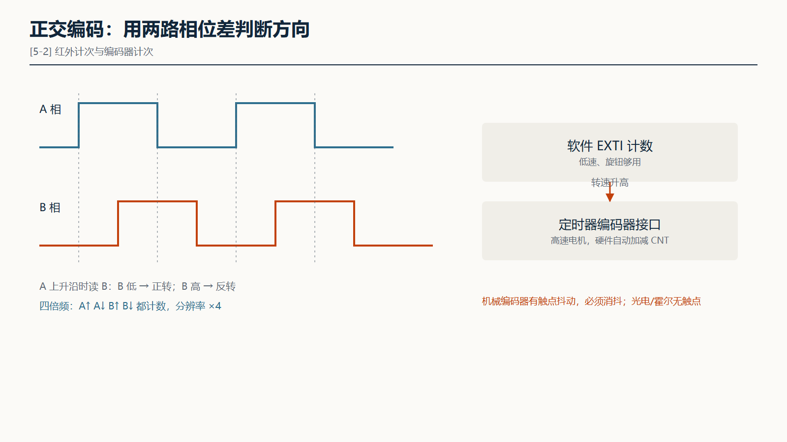

课程时长：约 50 分钟 | 深度版 | 配套结构图与看图理解
EXTI 的第一次实战：把“电平变化”变成“计数”。同时第一次接触正交编码——电机测速、旋钮调参都靠它。
这一节还会遇到“中断频率过高”的问题，为后面用定时器硬件接口埋下伏笔。
用 EXTI 实现遮挡计数
理解正交编码与四倍频
用相位判断方向
知道何时该换硬件编码器接口

图 9 正交编码 A/B 两相相位差与计数方向判断
先看相位：A 相上升沿出现时，B 相还是低电平；半个周期后 B 才上升——这就是 90° 相位差。
判断方向靠“谁先谁后”：A 上升沿时读 B，若 B 为低说明 A 领先，正转；反之反转。四倍频是把 A、B 的上升沿和下降沿都拿来计数，一圈的计数变成单相的 4 倍。
发射端持续发红外，接收端无遮挡时导通。遮挡时接收端状态改变，模块 DO 翻转，产生一个边沿——这就是一次计数事件。
计数逻辑极简：EXTI 下降沿触发 → 计数器加一。关键是消抖与去重，否则一次遮挡会计出好几次。
| 概念 | 含义 |
|---|---|
| A/B 两相 | 相差 90° 的方波 |
| 正交 | 靠谁先谁后判断方向 |
| 四倍频 | A↑ A↓ B↑ B↓ 都计数 |
| 机械编码器 | 有触点抖动，必须消抖 |
| 光电/霍尔 | 无触点，频率高 |
判断规则取决于 A/B 的相位定义，实际以实测为准：用手转一格，看计数是加还是减，不对就交换两线或取反。
/* A 相下降沿中断里读 B 相 */ if (GPIO_ReadInputDataBit(GPIOB, GPIO_Pin_1) == 0) count++; /* B 为低：正转 */ else count--; /* B 为高：反转 */
机械编码器每格有定位感，但仍会抖动，需 5–20ms 消抖
软件：中断里延时不可取，应改用定时器采样或状态机
硬件：RC 低通 + 施密特触发器效果最好
软件 EXTI 在低速时够用，但电机转速高时中断太频繁，CPU 会被打断到无法工作。
此时改用定时器的编码器接口模式：硬件根据 A/B 相自动增减 CNT，CPU 只定时读取。
| 方式 | CPU 占用 | 适用 |
|---|---|---|
| 软件 EXTI | 高（每个边沿一次中断） | 旋钮、低速计次 |
| 硬件编码器接口 | 低（只读 CNT） | 电机测速 |
正交解码的本质是相位差：A 领先 B 90° 是一个方向，B 领先 A 90° 是另一个方向。数边沿得到位移，比相位得到方向。
四倍频不是为了“更准”，而是为了提高分辨率：单相计数一圈 1000 个脉冲，四倍频后 4000 个，速度分辨率提高 4 倍。
例：1000 线编码器、四倍频 = 4000 计数/圈；3000rpm = 50 转/秒 → 200,000 计数/秒。
这个频率下软件 EXTI 每秒 20 万次中断，CPU 无法承受——必须用定时器硬件编码器接口。
| 错误写法 | 后果 | 正确做法 |
|---|---|---|
| 只数单相上升沿 | 分辨率只有 1/4 | 四倍频或双边沿计数 |
| 中断里延时消抖 | 高速时丢脉冲 | 硬件 RC 或定时采样 |
| 用 16 位变量计数 | 几分钟就溢出 | 用 32 位或定时清零 |
| A/B 接反 | 方向相反 | 交换两线或取反 |
正交编码的本质是“两路方波相位差 90°”，方向信息藏在相位关系里，位置信息藏在边沿数量里。所以既能测速（单位时间计数差），也能测位置（累计计数）。
为什么高速要换硬件编码器接口：软件 EXTI 每个边沿进一次中断，电机 3000rpm、1000 线编码器四倍频后每秒几十万次中断，CPU 根本处理不过来。
手动转一格，看计数是 +1 还是 +4（四倍频）
反向转，确认计数递减
示波器同时看 A/B，确认相位差 90°
| 现象 | 原因 | 解决 |
|---|---|---|
| 一次遮挡计数多次 | 抖动 | 硬件 RC + 软件确认 |
| 方向相反 | A/B 接反 | 交换两线或取反 |
| 高速丢计数 | 中断太频繁 | 改硬件编码器接口 |
| 计数乱跳 | 引脚浮空 | 上拉 + 屏蔽线 |
Q1. 四倍频是什么？
A：A、B 的上升沿与下降沿都计数。
Q2. 怎么判断方向？
A：在一个相的边沿读另一个相的电平。
Q3. 机械编码器为什么要消抖？
A：触点抖动会让一次转动计成多次。
Q4. 什么时候用硬件接口？
A：转速高、脉冲频率超出软件处理能力时。
Q5. 计数溢出怎么办？
A：用 32 位变量或定时读取清零。
Q6. 红外计次和编码器计次的区别？
A：前者只数次数，后者还带方向。
Q7. 为什么高速不能用软件计数？
A：中断频率超出 CPU 处理能力。
Q8. 编码器计数溢出怎么处理？
A：32 位变量或定时读取并清零。
1. A 上升沿时 B 为低，正转还是反转？
答：取决于接线，实测为准。
2. 四倍频后分辨率提高几倍？
答：4 倍。
3. 为什么中断里不能延时消抖？
答：阻塞其他中断与主程序。
4. 硬件编码器接口读什么？
答：定时器的 CNT。
☐ 能配 EXTI 计数
☐ 懂正交与四倍频
☐ 会判方向
☐ 知道何时换硬件接口